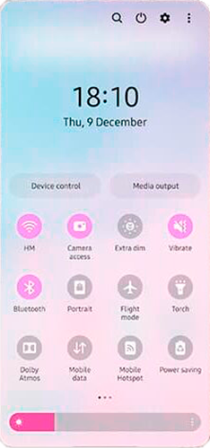

One UI — третья оболочка ОС Android, разработанная компнией Samsung Electronics для своих устройств. Нацелена на
улучшение работы пользователя с устройствами одной рукой.

Разработка
Об One UI стало известно на конференции разработчиков в 2018 году.
Первые устройства с новой оболочкой — Samsung Galaxy S9, Samsung Galaxy S9+ и Samsung Galaxy Note 9.
Версии (основные моменты)
- One UI 1.0/1.1/1.5 на основе Android 9 (по сравнению с прошлой оболочкой — Samsung Experience)
-
- обновлены встроенные приложения
- переработанные иконки
- обновлённый шрифт
- тёмная тема
- обновлённая шторка уведомлений
- новые жесты
- One UI 2.0/2.1/2.5 — 14 октября 2019, на основе Android 10
-
- новые жесты
- уменьшен размер всплывающих окон
- изменён дизайн некоторых разделов в настройках
- улучшена тёмная тема
- добавлена корзина контактов
- выбор режимов в приложении Камера
- One UI 3.0/3.1/3.1.1 — 1 декабря 2020, на основе Android 11
-
- продолжение работы приложений на других устройствах
- изображение в фоне экрана вызова
- One UI 4.0/4.1 — 17 ноября 2021, на основе Android 12
-
- новый дизайн панели быстрых настроек
- новая функция "ммаксимальное затмение"
Особенности
- управление одной рукой
- ночной режим
- обзорный экран последних приложений использует в горизонтальной компоновке